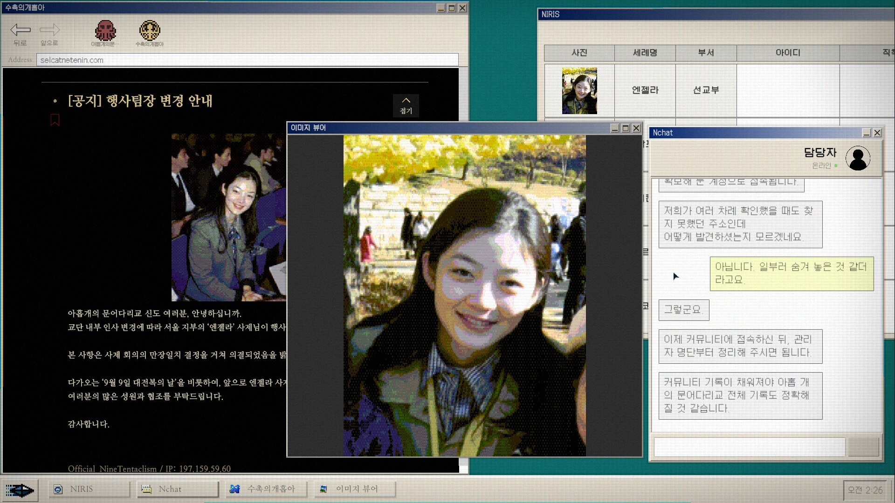
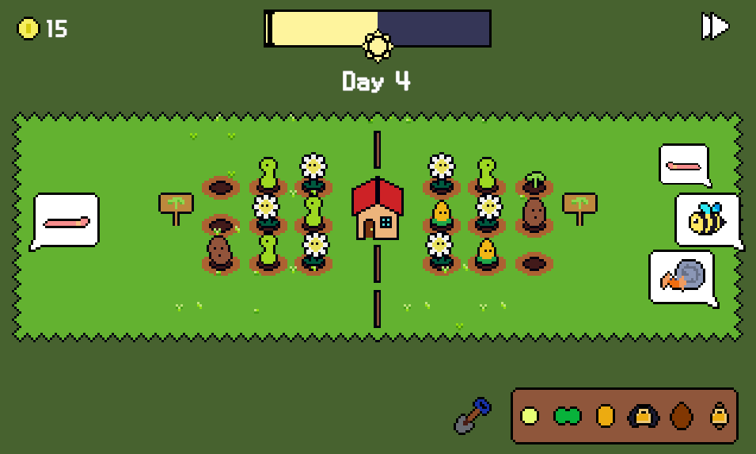
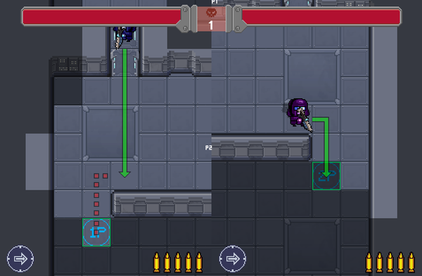
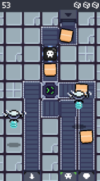
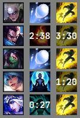
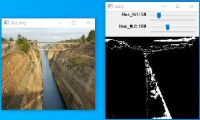
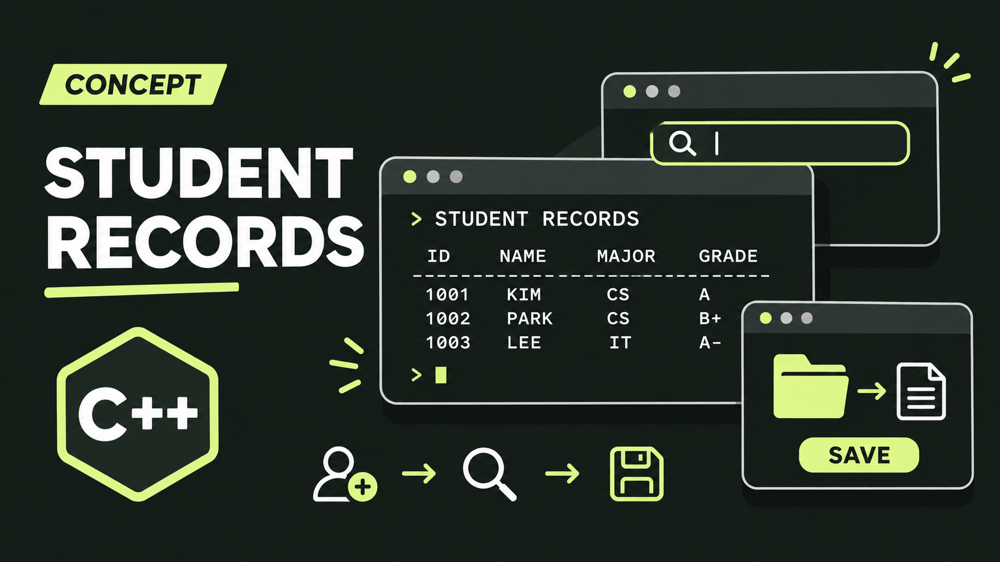
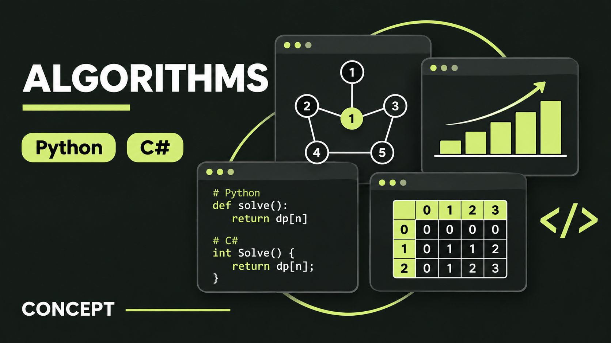
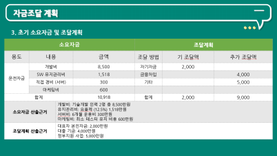

PCCP Lv.3
2024.12
게임 클라이언트 프로그래머
근거를 생각하며 개발합니다. 왜 이 방법을 선택하는지, 어떤 문제를 해결하는지 고민합니다.
다양한 아이디어를 나누며 함께 해결책을 찾는 것을 좋아합니다. 해결이 필요한 문제에는 먼저 나서고, 팀과 함께 더 나은 방법을 찾습니다.

01 / ABOUT
C#과 Unity를 활용해 사용자 인터페이스를 설계하고 구현합니다. 검색 결과와 분석 데이터를 그래프와 순위표로 시각화하고, UI를 통합 구현한 경험이 있습니다.
검색 결과 UI의 생성과 갱신을 구현하고, 콘텐츠의 일괄 입력과 검증을 지원하는 에디터를 개발했습니다.
공통 로직을 기반 클래스로 분리하고 상속으로 기능을 확장한 경험이 있습니다. 객체지향 구조와 디자인 패턴에 관심이 많으며, 객체의 책임을 명확히 나누고 프로젝트에 맞는 구조를 고민합니다.
소프트웨어학과 학사 졸업
02 / CERTIFICATIONS
2024.12
2024.09
03 / PROJECTS
게임 개발과 도구 제작
주요 구현 기능

디지털 기록과 단서를 연결하는 사건 추적 미스터리 어드벤처
위 시스템의 설계는 직접 수행했으며, 코드 작성에는 AI를 상당 부분 활용했습니다.
Steam 평가 2,000+ / 압도적으로 긍정적

유튜브 댓글의 키워드와 긍정 및 부정 반응 분석 도구
관련 자료 영상 검색 결과 UI 코드 키워드 분석 UI 코드

1분간 식물을 키우고 1분간 집을 방어하며 5일 동안 생존하는 디펜스 게임
관련 자료 콘테스트 리뷰 보관본(운영자 제공 백업 자료)
만들래 10분 게임 콘테스트 방치편 출품작

분할 화면으로 임무를 수행하는 2인 협동 전략 게임
관련 자료 명중률 계산 코드 서피스 기반 시야 코드
2022년 게임메이커 커뮤니티 대회 ‘대면시대’ 1위


무작위 컨베이어 벨트 기반 상자 분류 게임

클릭으로 상대 소환사 주문 쿨타임을 기록하는 게임 오버레이
관련 자료 게임 API 연동 코드 쿨타임 계산 코드

회원가입, 장바구니, 주문, 환불 및 판매자 관리 기능을 갖춘 쇼핑몰
관련 자료 주문 데이터 조회 코드

영상 필터링과 기하 변환 및 처리 결과 분석 실습

학생 정보 등록, 검색 및 파일 저장용 C++ 콘솔 프로그램

백준과 프로그래머스 알고리즘 문제 풀이 기록

인디 게임 개발자와 테스터를 연결하는 테스트 기록 및 QA 피드백 서비스 기획
관련 자료 서비스 기획 발표자료
04 / SKILLS
05 / CONTACT